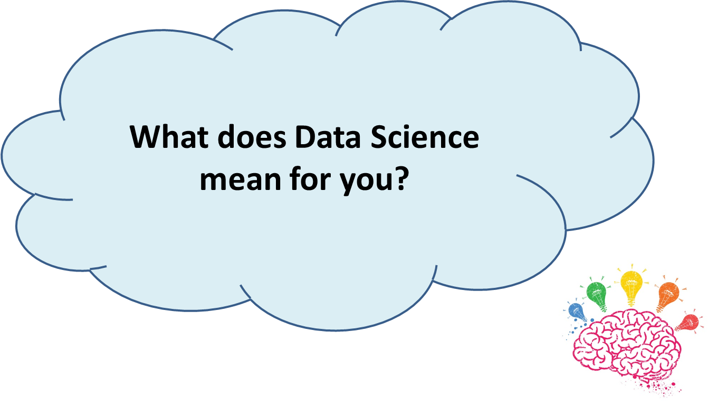
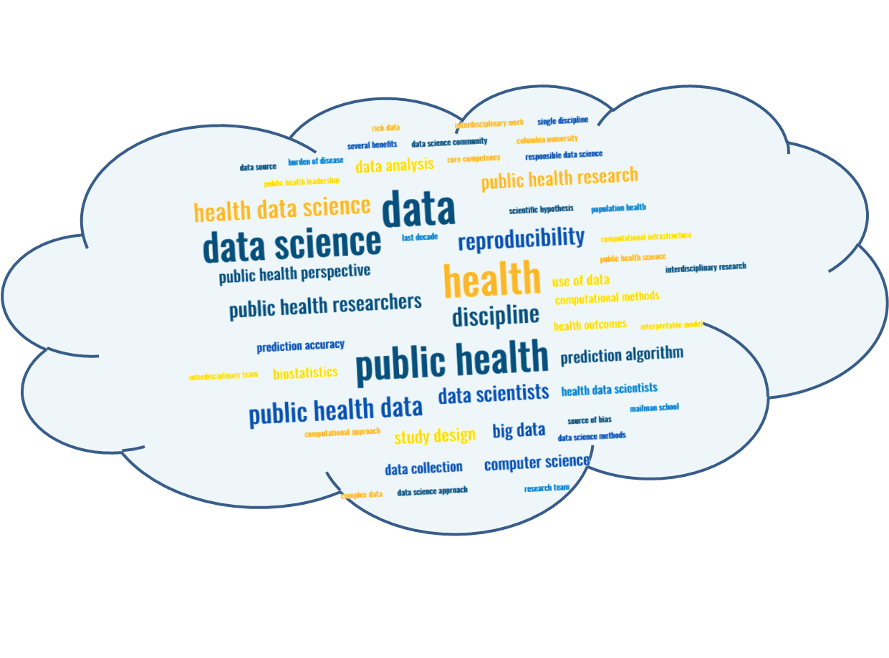

Day 2: Data Science for Public Health
What is Data Science
What does Data Science mean for you?

Had you thought of any of those words? Word cloud generated by MonkeyLearn from (Goldsmith et al. 2021)

Where do you see yourself on this Venn diagram

What do experts say about Data Science?
The statistics profession faces a choice in its future research between continuing concentration on traditional topics – based largely on data analysis supported by mathematical statistics – and a broader viewpoint – based on an inclusive concept of learning from data. The latter course present severe challenges as well as exciting opportunities. The former risks seeing statistics become increasingly marginal…
John Chambers1 (Chambers 1993)
“Data science is the science of learning from data; it studies the methods involved in the analysis and processing of data and proposes technology to improve methods in an evidence-based manner. The scope and impact of this science will expand enormously in coming decades as scientific data and data about science itself become ubiquitously available.
David Donoho2 (Donoho 2017).
Public health data science is the study of formulating and rigorously answering questions in order to advance health and well-being using a data-centric process that emphasizes clarity, reproducibility, effective communication, and ethical practices. […] Data science implies a perspective that is shaped by […] interdisciplinary work.
Goldsmith J, Sun Y, Fried LP, Wing J, Miller GW and Berhane K (2021) The Emergence and Future of Public Health Data Science. Public Health Rev 42:1604023.
A tentative definition
NIH defines data science as “the interdisciplinary field of inquiry in which quantitative and analytical approaches, processes, and systems are developed and used to extract knowledge and insights from increasingly large and/or complex sets of data”
In this book, we define data science as
Data science is an interdisciplinary collaborative field that tries to answer rigorously formulated public health questions by relying on a set of collective evidence-based processes, theories, concepts, tools and technologies that enable the extraction of valuable knowledge and information from data to generate actionable insights that effectively communicated to decision-makers can advance health and well-being.
- Interdisciplinary collaborative field
- Rigorous public health question formulation
- Set of collective evidence-based processes, theories, concepts, tools and technologies
- Extraction of valuable knowledge and information from data
- Generation of actionable insights
- Effective communication to decision-makers